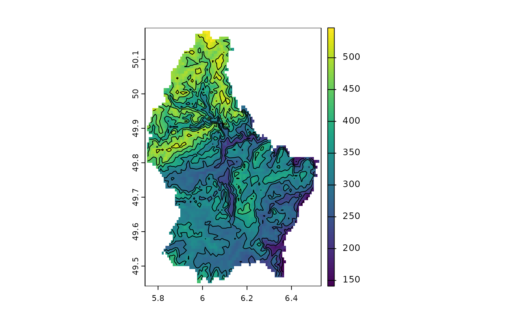
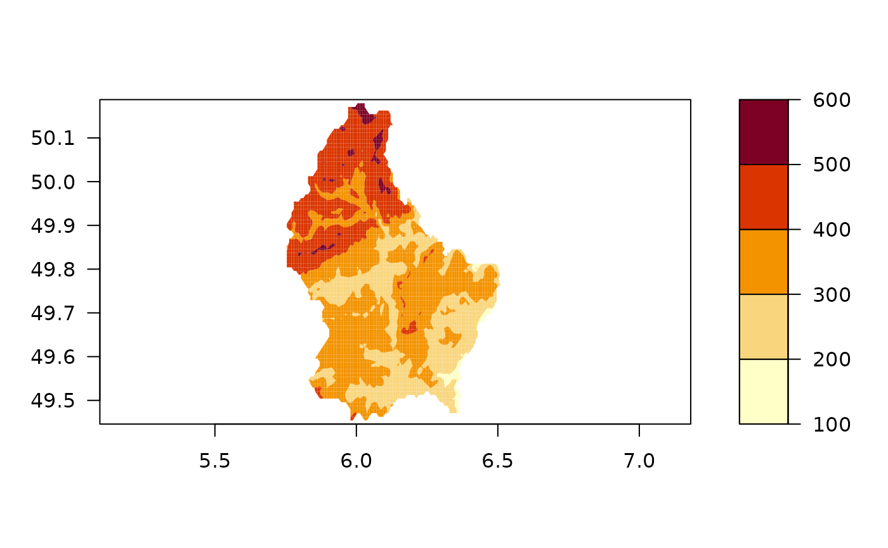
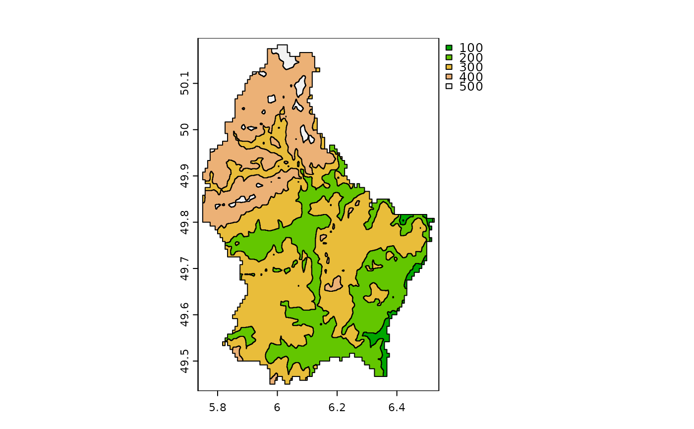
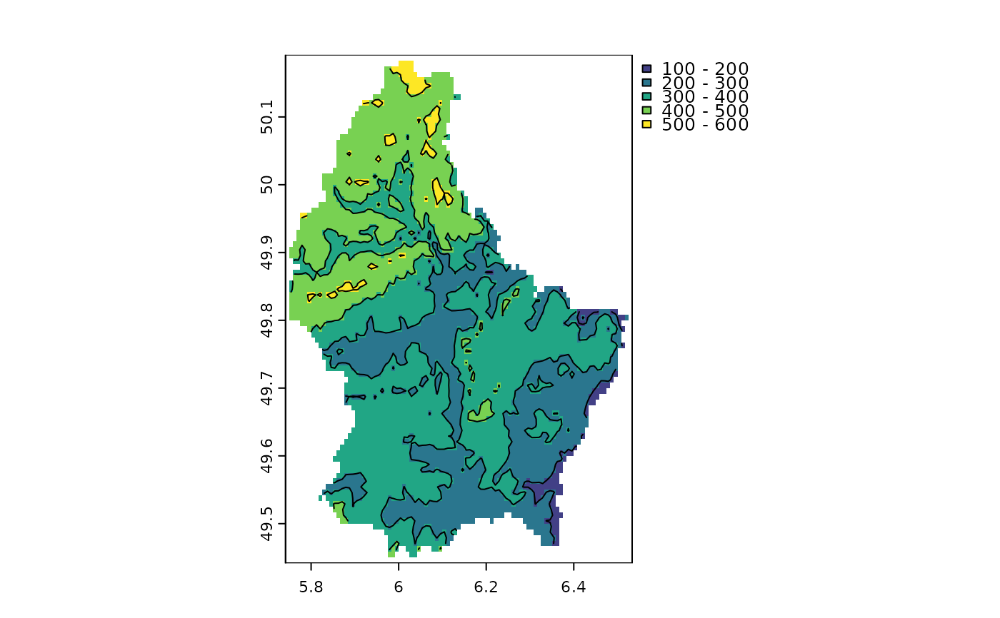

Contour plot
contour.RdContour lines (isolines) of a SpatRaster. Use add=TRUE to add the lines to the current plot. See graphics::contour for details.
if filled=TRUE, a new filled contour plot is made. See graphics::filled.contour for details.
as.contour returns the contour lines as a SpatVector.
Usage
# S4 method for class 'SpatRaster'
contour(x, maxcells=100000, filled=FALSE, ...)
# S4 method for class 'SpatRaster'
as.contour(x, maxcells=100000, ...)Arguments
- x
SpatRaster. Only the first layer is used
- maxcells
maximum number of pixels used to create the contours
- filled
logical. If
TRUE, afilled.contourplot is made- ...
any argument that can be passed to
contourorfilled.contour(graphics package)
Examples
r <- rast(system.file("ex/elev.tif", package="terra"))
plot(r)
contour(r, add=TRUE)
v <- as.contour(r)
plot(r)
lines(v)

contour(r, filled=TRUE, nlevels=5)

## if you want a SpatVector with contour lines
template <- disagg(rast(r), 10)
rr <- resample(r, template)
rr <- floor(rr/100) * 100
v <- as.polygons(rr)
plot(v, 1, col=terrain.colors(7))

## to combine filled contours with contour lines (or other spatial data)
br <- seq(100, 600, 100)
plot(r, breaks=br)
lines(as.contour(r, levels=br))

## or
x <- as.polygons(classify(r, br))
plot(x, "elevation")